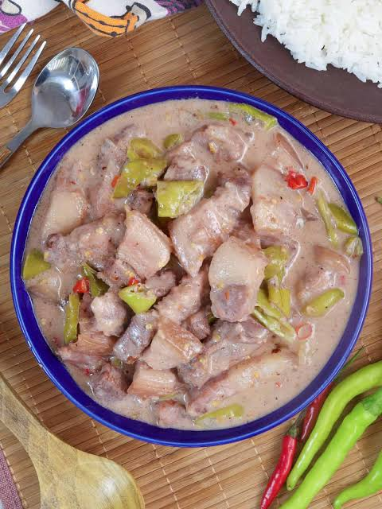

Bicol Express Recipe
Home

Description
Bicol Express is a popular Filipino stew made of succulent pork belly cooked in a rich, spicy coconut milk sauce infused with shrimp paste and a generous amount of chili peppers. Originating from the Bicol region of the Philippines, this savory dish is celebrated for its perfect balance of creamy texture and fiery heat.
Ingredients
- Pork belly
- Coconut milk
- Coconut cream
- Chili peppers (siling labuyo and siling haba)
- Shrimp paste (bagoong alamang)
- Garlic
- Onion
- Ginger
Steps
- Sauté the garlic, onion, and ginger in a large pan until fragrant.
- Add the pork belly and cook until it turns lightly browned and releases its natural oils.
- Stir in the shrimp paste (bagoong) and cook for a few minutes to release its flavors.
- Pour in the coconut milk, bring to a simmer, and let the pork cook until it becomes tender.
- Add the sliced chili peppers and coconut cream, then simmer until the sauce thickens and reduces.